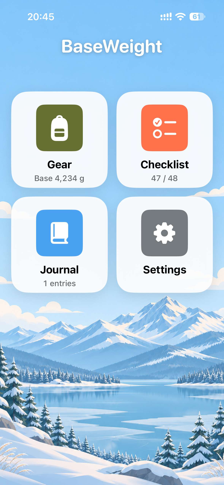
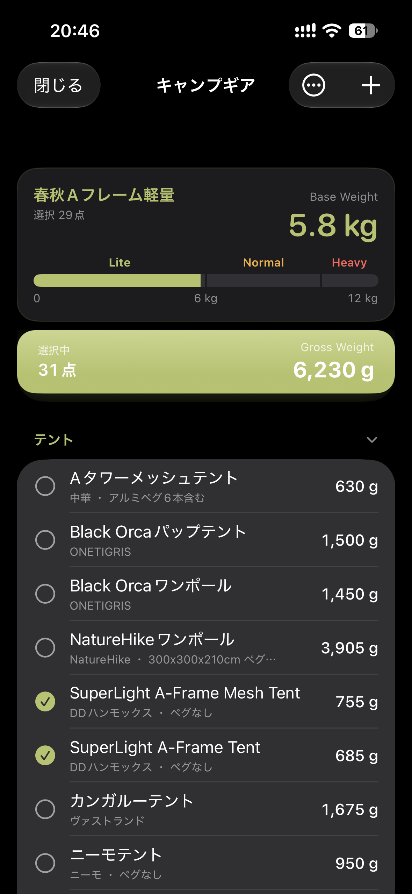
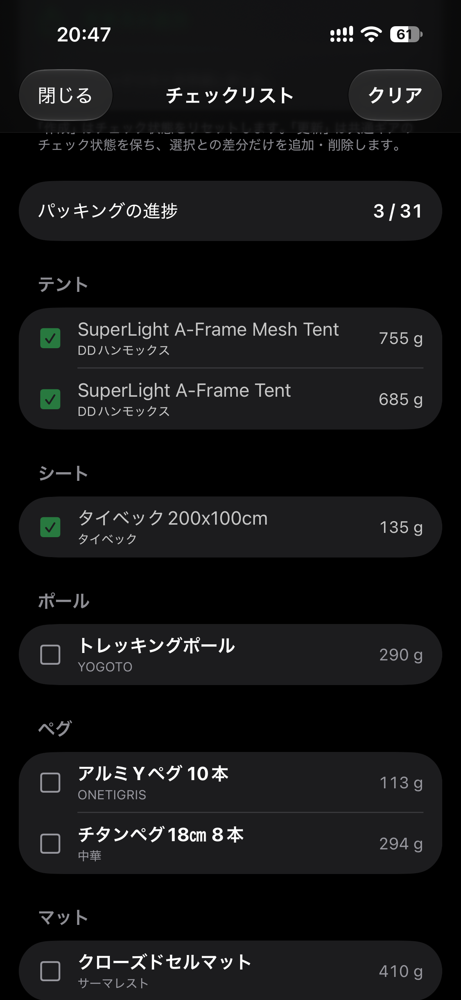
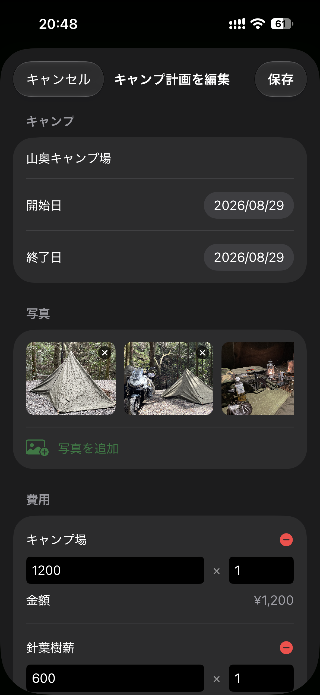
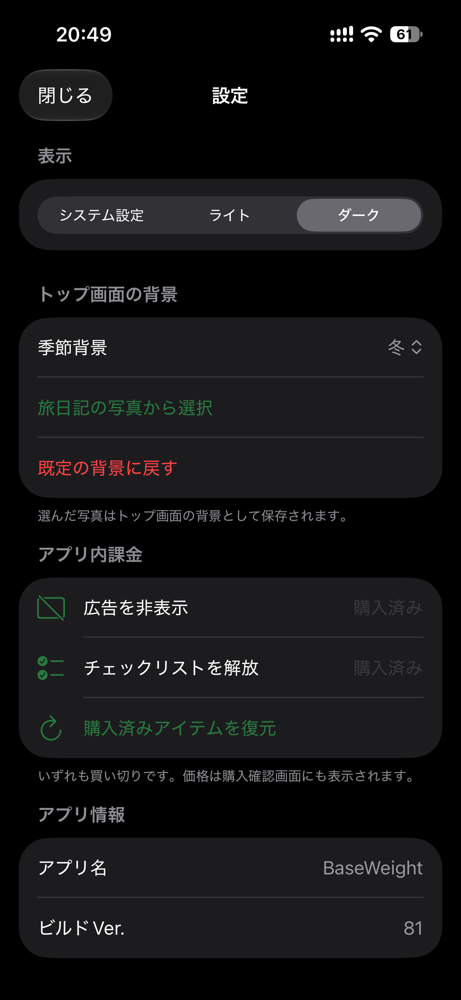

iPhone app
BaseWeight
キャンプの装備を選んで、
軽やかに旅へ出よう。

Pack with intention
必要なものを、
きちんと選ぶ。
キャンプギアの登録・選択・重量集計、パッキング用チェックリスト、キャンプの旅日記を、ひとつのアプリにまとめました。
01Base Weightを、
Base Weightを、
ひと目で把握。
食料、水、燃料などの消耗品を除いたBase Weightと、選択したすべてのギアの総重量を同時に確認。12kgまでの重量メーターで、装備の軽さも直感的に見渡せます。


02パッキングを、
パッキングを、
抜けなく進める。
選択中のギアからチェックリストを作成。チェック済み件数と全件数を確認しながら、出発前の準備を進められます。
Journal
旅の記憶も、
装備といっしょに。
キャンプ場、日付、写真、費用、メモを旅日記として保存できます。写真はホーム画面の背景にも設定できます。


03景色も、
景色も、
自分らしく。
システム設定・ライト・ダークの表示テーマに対応。季節の背景や旅日記の写真を選び、ホーム画面を好みに合わせて変えられます。
BaseWeight
次のキャンプを、
もっと身軽に。
App Store の配信ページを確認後、こちらにリンクを掲載します。